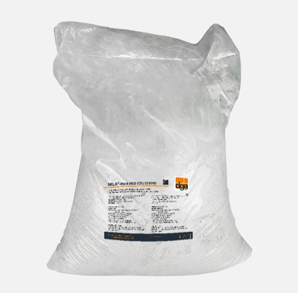
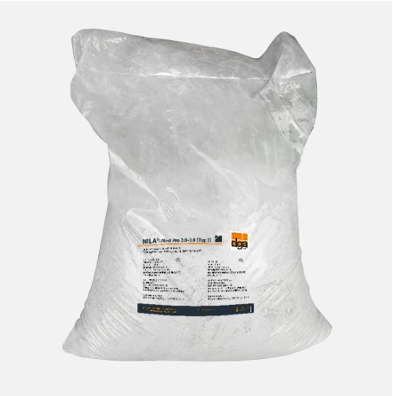
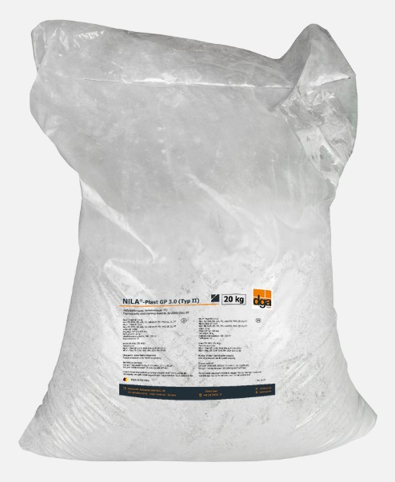
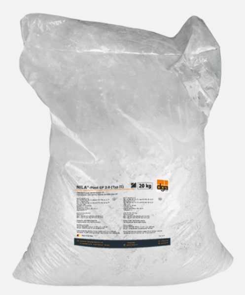

Горячий пластик для нанесения и заливки типа маркировок ІІ, категория дороги Р7
NILA®- Plast GP 2.0-3.0 (тип II)
Горячий структурированный пластик для укладки маркировок типа ІІ, категории дорог Р7
NILA®- Plast PRO 125 / II RMD 2.0-R (P7)

Горячий структурированный пластик для укладки маркировок типа ІІ, категории дорог Р7
NILA®- Plast PRO 125 / II RMD

Горячий структурированный пластик для укладки маркировок типа ІІ, категории дорог Р6
NILA®- Plast PRO 125 / II RMD 2.0-R (P6)

Горячий пластик для типа маркировки І, категории дороги Р7
NILA®- Plast PRO 125 / II (тип I)
Горячий пластик для типа маркировок І, категории дорог Р7
NILA®- Plast PRO 2.0-3.0 (тип I)
Горячий пластик для нанесения и заливки маркировок типа II, класс дороги P7
NILA®- Plast GP 3.0-P (тип II)
Горячий пластик для нанесения и заливки маркировок типа II, класс дороги P7
NILA®- Plast GP 3.0-W (тип II)

Горячий пластик для нанесения и заливки маркировок типа II, класс дороги P7